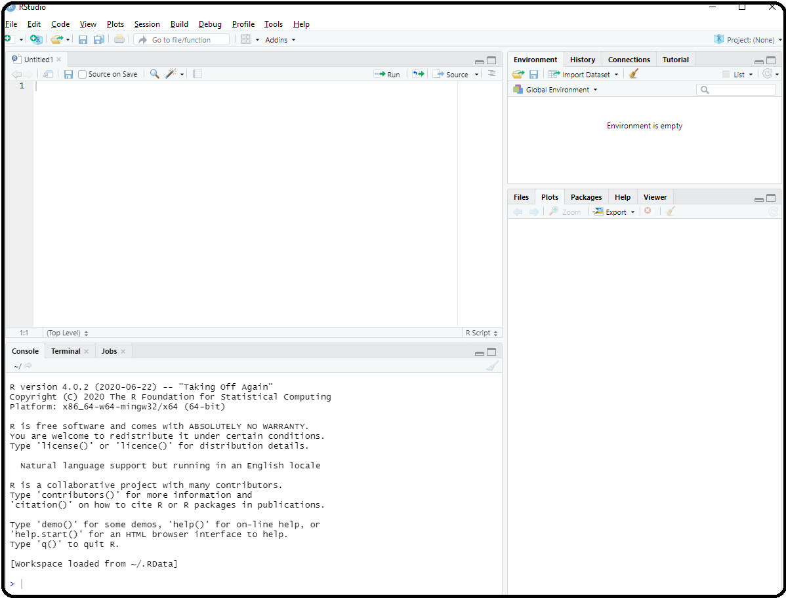
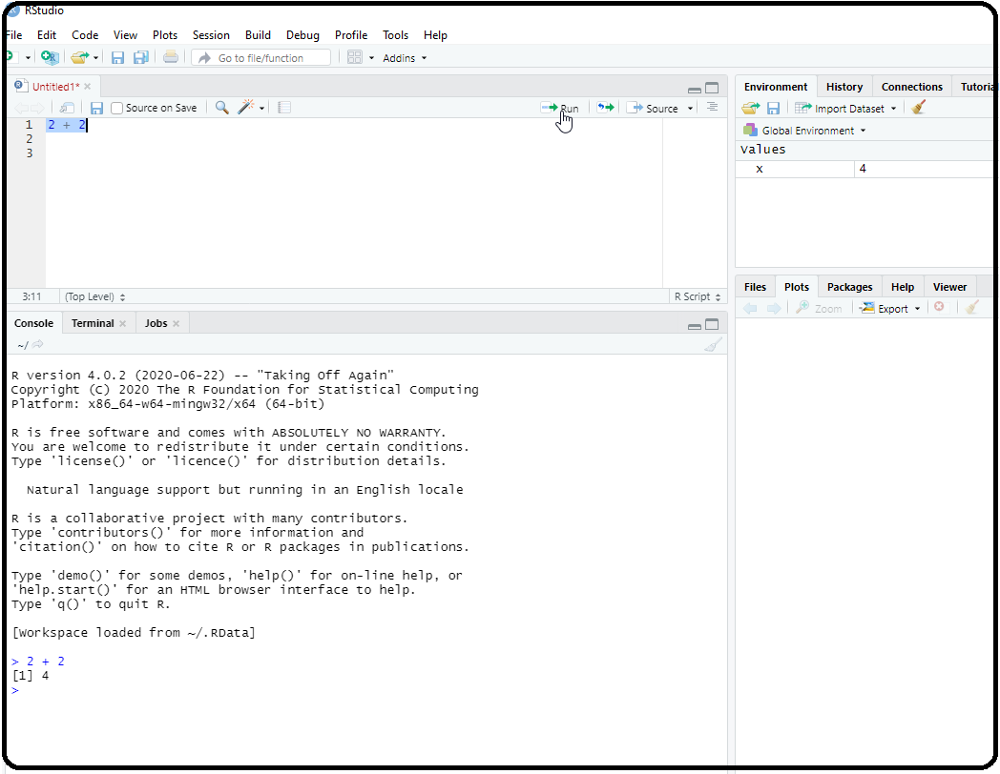
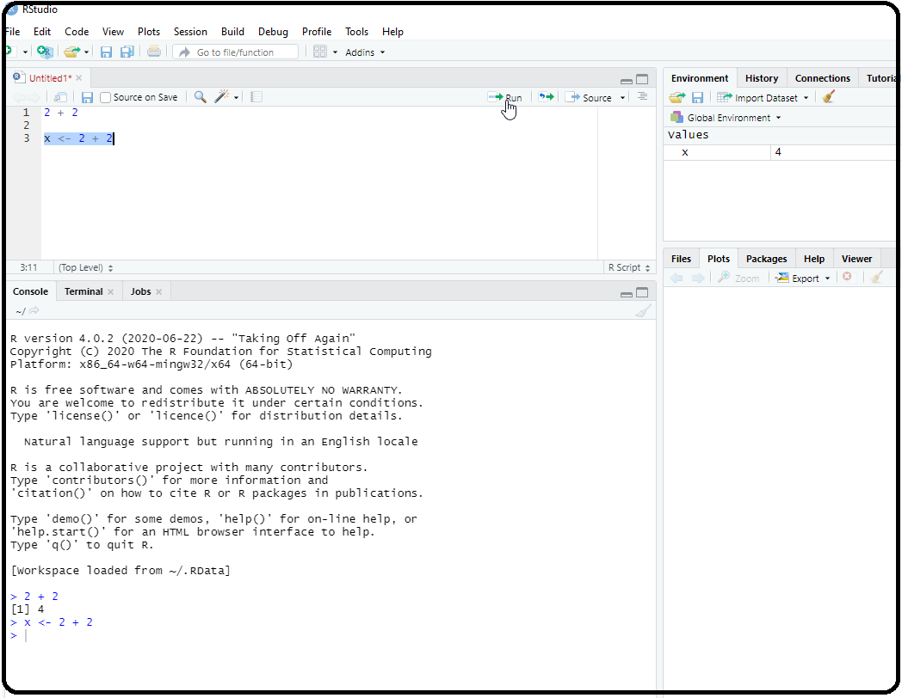

Appendix B — A first session in RStudio
Anytime you open RStudio, we say we are in an RStudio session. After opening RStudio for the first time, you will see the RStudio interface, which consists of three panes. Next, open the script editor by selecting File > New File > R Script to make the script editor appear. RStudio should look something like what you see below but perhaps with different colors: 
B.1 The layout of RStudio
A brief description of each pane follows:
The upper left pane is the R Script file. This is where will type in commands to be executed in the script editor. Writing and saving a series of R commands in the script file makes it easy to reuse or modify code at a later time.
The lower left pane is called the console pane. Every time you launch RStudio, it will have the same text at the top of the console telling you the version of R that you’re running. Below that information is the Rprompt (the symbol
>). As its name suggests, this prompt is really a request, a request for a command. It is here where RStudio will tell R what to do. This is the most important pane because this is where R actually does stuff.-
Upper right pane contains your environment/history pane.
- In the environment tab you can see which data and values R has in its memory. R’s memory is called an environment.
- The history tab shows what has been typed before.
- Don’t worry about the rest of the tabs.
-
Bottom right pane is the files/plots/packages/help pane.
- In the Files tab you can browse and select files to open.
- The Plots tab will show any plots that you create.
- The rest of the tabs we will revisit as needed.
B.2 Getting familiar with R
To get familiar with R, it will first be used as a calculator. To get started, enter the 2 + 2 in the script editor. Once typed, highlight it and select the “Run” button (see image below)

Executing the command 2 + 2 only executes/runs the command in R. That is, RStudio was used to to tell R to add two plus two, and R responded with 4 in the R console. It did not save the result, it simply evaluated 2 + 2.
If you want to save the result of 2 + 2 so that you can use it later, then we have to tell R to store the result by assigning the result to an object you can access later. Think of an R object as anything that holds/stores information (some data structure)
To assign the result of 2 + 2 to an object called x, type x <- 2 + 2 on a new line in the editor. Also, assign the result of 3+5 to an object called X. Then highlight these line and select “Run”.
Note that either = or <- may be used for assignments.

2 + 2 to an object called xNote the following:
The R code
x <- 2 + 2translate to “assign the result of 2 plus 2 to an object calledx”.You can also see the new object
xin the environment on the upper right pane.R is case-sensitive!
xandXare distinct.Get into the habit of saving things in R objects so that they can be accessed at later time. As long as your RStudio session remains open, RStudio keeps any R objects that you defined in it’s memory.
Once you end your session, RStudio loses what it has stored in its memory. Next time an RStudio session is started, no R objects will appear in its memory. Is this a problem? Later you will see that this is not a problem!
At its most basic level, R can be viewed as a fancy calculator. While we won’t be using RStudio do algebra problems, it is a good way to get familiar with RStudio.
Upon selecting “Run”, the result of the above appears in the console pane, preceded by the command you executed, and prefixed by the number 1 in square brackets
[1]. The[1]indicates that this is the first (and in this case only) result from the command.Many commands will return multiple values. Try the following one by one, where each is typed on a new line and then selecting “Run” after typing the command in the editor:
Code
25*10
5/2
2 + 2- After running these commands, you should note the R prompt:
>.- The
>prompt means that R is content and ready for a new command or input. - Please note that spacing is not an issue with R. For example,
5 / 2is the same as5/2. However, using spaces makes the code easier to read and catch mistakes.
- The
B.4 Creating and saving your RStudio script
It’s always good practice to save your RStudio script. Edit the script that we have started to look like this:
Code
### Name: Your-name-here
### File description: Some misc R code
2 + 2
x <- 2 + 2
25*10
5/2
2 + 2Next, save the RStudio script/file by selecting File > Save as. Save the text file as an .R file. Any RStudio script should be saved as a .R file.
B.5 Installing required packages
There are many packages (also called libraries) that come installed with R or that can be installed to expand the ability of R. There are a few additional packages that need to be installed. The following packages are specifically designed to make R more accessible and easier for data analysis:
tidyverse: This packages provide a collection of R packages designed for data science. Functions front his packages will be utilized for aspects of importing data and data management.mosaic: This packages provides a number of functions that makes some basic data analysis tasks easier.
To install these packages, in the R console type the following command:
Code
install.packages( "tidyverse" ) # no spaces within quotation marks!Hit enter. Activity will start occurring in the R console. This may take a few minutes to complete. During the installation process, if R requests that + an CRAN mirror be selected for downloading, any USA mirror will do. + the personal library on your computer be used, answer yes. This ensures that admin privileges are not required for installation. + packages be updated, please agree to the updates.
When it is done installing, it should say something similar to “The downloaded binary packages are in…” right above the R prompt >. This mean the packages were installed without error. Now repeat the sames step for the package mosaic. Again, this may take a few minutes to complete.
Alternatively, you can select Tools from the RStudio menu, followed by Install packages. Enter the name of the R package under “Packages (separate…)” and click “Install”. Activity will then start occurring in the R console as when using install.packages().
R packages will only have to installed once on the computer that is being used. However, once the package is installed, you will have to load it into the workspace (R’s memory) before it can be used every time you start a new RStudio session. If you are using a different computer, you will have to install these packages again.
To load a package, run the command library(package-name). For example. to load the mosaic packages, run the following in R:
B.6 Some useful tips
Some things to remember when using RStudio:
Always use an R script (a .R file) to save your work.
R is case-sensitive!
Does the code in the R console keep going and going and…? Hit the
Esckey once or twice!If you see a
+prompt in the R console, it means the console is waiting for more input.Comment your code using
#. It’s amazing what you can forget quickly.You are expected to look back at the appendix or other segments in this resource if you forget something along the way, as you would for any other software that you are starting to learn.
Some sections will contain examples or templates of how to do certain analysis. You job will primarily will be to edit the templates to reflect the data that you are working with.
Getting an error message? An online search for the error message will be useful.
B.3 Comments
Everything that is typed after a
#sign is assumed to be a comment and is ignored by R. Adding comments to R scripts is useful because it will help one recall what the commands or lines of code does. In the editor, type the following and select “Run”:Code
Note that
yis now in RStudio’s memory, and its value can be accessed by typing y on a new line and selecting “Run”. Now, type the following in your editor on a new line and then select “Run”:Code
Note that this code ignored because of
#. Get into the habit of using comments!